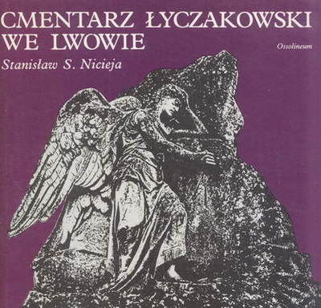

Cmentarz Łyczakowski we Lwowie
Ze wtępu autora: "Każda metropolia niczym wielowiekowe drzewo spowita jest pierścieniem pokoleń narastającej stopniowo tradycji. Lwów jako jedno z miast z miast leżących na skrzyżowaniu dróg i światów, mów i ras, wiar i kultur był stolicą kraju, w którym przenikały się nawzajem i nierzadko antagonizowały dynamiczne społeczności: polska, ukraińska żydowska, ormiańska, a z czasem również niemiecka i rosyjska. Ten czynnik w sposób najistotniejszy wpływał na powstanie niezwykle trudnej do zdefiniowania i ulegającej gwałtownym zmianom swoistości tego miasta. W dziejach kultury polskiej Lwów odegrał rolę, której żaden rzetelny badacz przeszłości zbagatelizować nie jest w stanie. W XIX w., w latach niewoli, był on bowiem obok Krakowa, Warszawy, Wilna i Poznania jednym z najważniejzych dla Polaków ośrodków kulturalnych i politycznych (...). Potencjał kulturalny i gospodarczy miast znajduje odbicie nie tylko w wielkich pomnikach archtektury, ale także na okalających je cmentarzach, gdyż w stałej symbiozie z metropoliami rozwijały się nekropolie - swoiste dzielnice, do których karty meldunkowe wydawał Charon. Warszawa miała swoje Powązki, Kraków - Rakowice, Wilno - Rossę, a Lwów - Łyczaków. Książka niniejsza, przedstawiająca dzieje cmentarza Łyczakowskiego i sylwetki ludzi z nim związanych jest owocem wieloletnich dokumentacyjnych prowadzonych zarówno w kraju, jak i za granicą.Podstawowy materiał do niej został zebrany podczas trzykrotnego pobytu autora we Lwowie jako stypendysty w tamtejszym Uniwersytecie w latach 1980-1985 i uzupełniony kwerendą w głównych bibliotekach polskich."